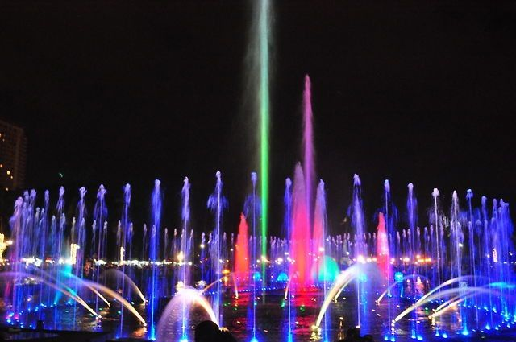

The Historical Rizal Park
Also known as Luneta Park, Rizal Park is named after 19th-century Philippine national hero Dr. Jose Rizal, who was executed by the Spanish colonial government at this spot.
There is a shrine to Dr. Rizal, along with a statue to Lapu Lapu (Statue of the Sentinel of Freedom), who stopped Magellan’s invasion in 1521, and a Gallery of Heroes, dedicated to other key Filipino heroes throughout history.
Other highlights of the park include the tallest flagpole in the country, the kilometer zero marker, an orchidarium, and a giant relief map of the Philippine islands on a man-made lake.

Nearly every sightseeing tour stops at Rizal Park, along with other top Manila attractions such as Casa Manila and Fort Santiago. To experience Manila like a local, visit as part of a jeepney tour. Book a private tour to combine Casa Manila with other must-see attractions on your list.
How to Get There
Rizal Park is located next to Intramuros. It’s easiest to take a taxi or jeepney directly to Rizal Park, but you can also take the train to the United Nations station and walk a few minutes to the park.
When to Get There
It’s pleasant to visit Rizal Park year-round. The park is a favorite leisure spot that’s at its liveliest on weekends and public holidays. The open-air auditorium features rock concerts on Saturday nights and classical concerts on Sunday nights, and other events are held here periodically.
Tributes to Dr. Rizal
The Rizal Shrine is one of the most famous and photographed monuments in the Philippines. The 41-foot-tall (12.6-meter-tall) monument featuring a statue of Dr. Rizal and housing his remains is 100 meters from the exact location where he was executed, on December 30, 1896.
Larger-than-life-size statues and bas-reliefs depict key moments in his life, including his final moments (The Martyrdom of Dr. Jose Rizal). There is an entrance fee to this site, which includes a tour during the day and a presentation at night in Tagalog and English.